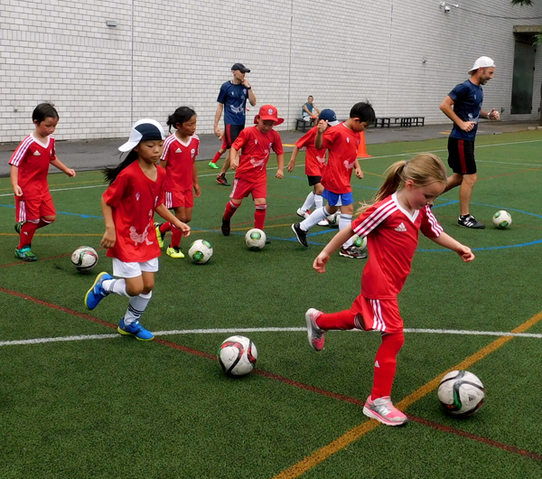
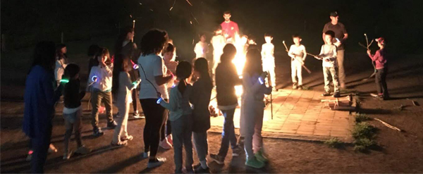
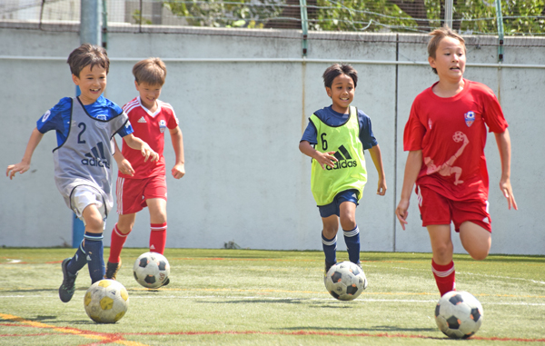
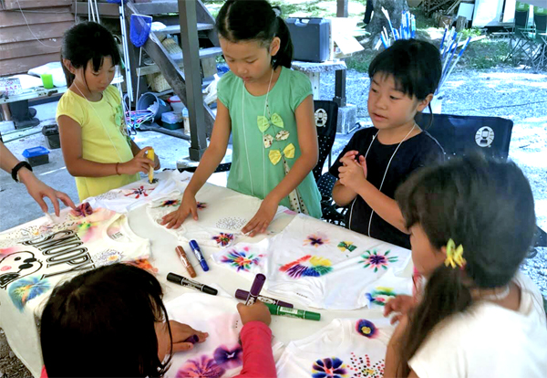

|
This year british Football Academy is teaming up with ACE Club to bring you a 3 day/2 night camp.
This will be our first 'sleep over' camp that will have not only football, but lots of outdoor activities like river trekking, BBQs, campfires & much more. The camp will be for 6-12 year olds (Grades 1~6) and both boys & girls are very welcome. The camp will be held in the beautiful, rolling green hills of Kimitsu, Chiba, just an hour away from Tokyo.
The kids will wake up and do their football training in the morning to beat the summer heat and in the afternoon do fun activities such as...
- River trekking and exploring
- Campfires and bbq party (pizza making)
- T shirt tie dying
- Night Hiking/Star watching
- Ice Cream Making
- Nature Arts & Crafts
- Water activities to cool down on those hot summer days
- And many other North American camp based games and activities.
- All children will be presented with an official Camp T-shirt.

Dates & Prices: August 8th (Thur) - 10th (Sat) - 2 nights/ 3 days
- EARLYBIRD SIGN-UP (by may 31st 2019)
BFA Members: ¥46,000 Non BFA Members: ¥49,000
*Transport to Kimitsu not included
- REGULAR SIGN-UP (after June 1st 2019)
BFA Members: ¥49,000 Non BFA Members: ¥52,000
*Transport to Kimitsu not included
- ONLINE SIGN-UP HERE

Important information for participants:
Please have your child bring a train pass for the trip from Tokyo/Chiba to Kimitsu.
Please bring your medical Insurance Card
Please have your child bring comfortable clothes (football kit or shorts & T-shirt) to play football 3 days.
Suitable shoes: rubber soled futsal shoes or trainers.
In case of heavy rain: football sessions will be cancelled.
A full list of what items to bring will be sent after registration.
We will take photos at the camps which we will post on our FACEBOOK PAGE
REGISTER ON-LINE HERE & GUARANTEE YOUR CHILD'S PLACE. Alternatively you can register at one of our regular locations or by CONTACTING US.
Payment method: Please make all payments by bank transfer (furikomi) to:
Bank Name: Bank of Tokyo Mitsubishi-UFJ
Branch: Shibuya Branch (135)
Account Type: Regular account #3648175
Account Name: 'Footy Japan K.K.'
Cancellation Policy: for late cancellations the following fees will apply: between1~3 days prior to the starting date booked = 100%; between4~7 days prior to the starting date booked = 50%, between 8~14 days prior to the starting date booked = 30%
Note 1: We may need to cancel the camp if we don't get enough participants, in which case we will refund your fee. We will email you 2 weeks before the camp starting date to inform you whether we go ahead with the camp or not.
Note 2: The football sessions will go ahead in the light rain, but will be cancelled in case of lightning/storm/strong wind.
Note 3: We will not be able to refund the camp fees or offer make up sessions in case of bad weather cancellation and/or for your own circumstances.
|
|


{kind=link}
{kind=link}